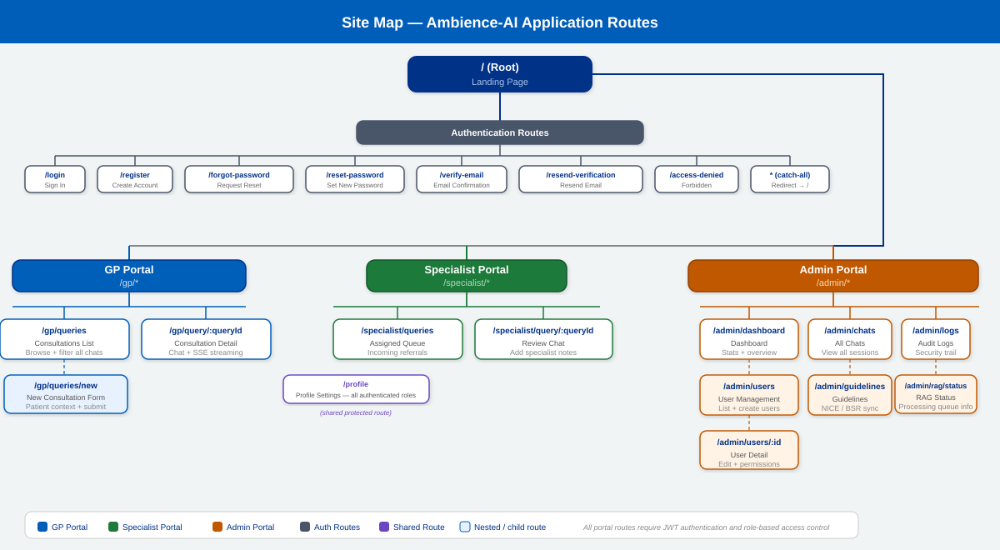
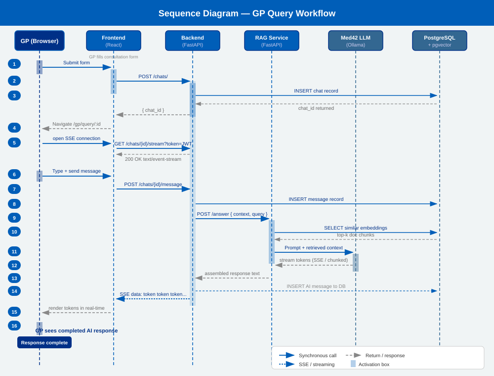
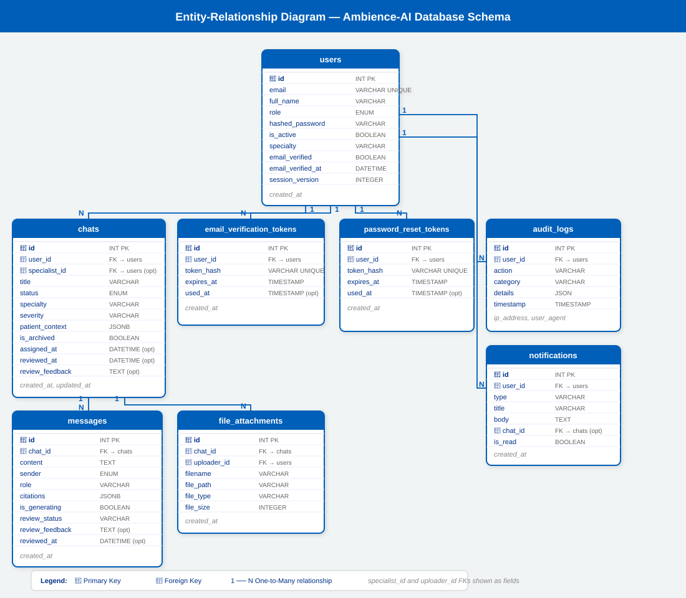

System Architecture
Ambience-AI is deployed as a containerised application across eight Docker services connected via a shared bridge network (ambience_net). In production, all inbound traffic enters through an Nginx reverse proxy on ports 80/443, which routes requests to either the Frontend (React/TypeScript, port 3000) or the Backend (FastAPI/Python, port 8000). In development, Vite's built-in dev server replaces Nginx entirely. The Backend communicates with the RAG Service (port 8001) for AI-related operations — answer generation, answer revision, and document ingestion — and with a RAG Worker for background retry processing of failed jobs. Persistent data is stored in PostgreSQL (port 5432) with the pgvector extension for vector embeddings, while Redis (port 6379) acts as both an application cache and the job queue that coordinates the RAG Worker. A Mailpit SMTP server (ports 1025/8025) handles email verification and password reset flows during development.
Three core backend services underpin the system. The REST API backend (FastAPI, port 8000) handles authentication, routing, and business logic across three RBAC roles — GP, Specialist, and Admin — with JWT-based auth, chat lifecycle management, SSE streaming, Redis-backed caching, and full audit logging. The RAG service (port 8001) is a standalone FastAPI service that receives queries from the backend, retrieves relevant medical evidence from the vector database, and generates grounded responses using the Med42 LLM. A background retry worker processes failed RAG requests via Redis Queue with exponential backoff (base 10 s, 2× multiplier, max 3 retries), using SHA-256 hashing for idempotent deduplication.

Site map
The frontend is a React Router v6 single-page application organised around three role-based portals. Unauthenticated users land on the root route (/) and can access authentication flows including login, registration, email verification, password reset, and resend-verification. Upon login, users are redirected to their role-specific portal: GP (/gp/*) for creating and managing clinical queries; Specialist (/specialist/*) for reviewing incoming queries, managing assigned cases, and submitting clinical reviews; and Admin (/admin/*) for user management, chat oversight, audit logs, and RAG queue monitoring. A shared /profile route is accessible across all roles. Unauthorised access attempts redirect to /access-denied, and any unmatched path is caught by a wildcard route.

Sequence diagram
The sequence diagram illustrates the end-to-end flow of a GP submitting a clinical query and receiving a streamed AI-generated response. The GP sends a message via the Frontend, which makes a REST call to the Backend. The Backend persists the message to PostgreSQL, enqueues an asynchronous RAG job in Redis, and immediately opens a Server-Sent Events (SSE) stream back to the Frontend. Concurrently, the RAG Worker picks up the job and calls the RAG Service, which retrieves relevant document embeddings from PostgreSQL's pgvector store and routes the query to the appropriate LLM — either a locally-hosted Ollama instance (running llama3-med42-8b) or a cloud-hosted Med42-70B model via RunPod, selected based on query complexity and clinical risk. Generated tokens are published back through the Backend's event bus and streamed token-by-token to the Frontend via SSE. Once generation completes, the final message is persisted and a notification is dispatched to any assigned specialist.
Once generation completes, the consultation moves through a review state machine: a chat starts as open, is automatically submitted after the first GP message, then assigned when a specialist self-assigns the case, and transitions through reviewing before reaching an approved or rejected terminal state. Message-level review overlays this chat-level workflow — individual AI messages carry their own review metadata, allowing specialists to reject or replace a single answer while keeping the broader consultation in progress.

ER diagram
The database schema centres on the users table, which stores credentials, role (GP, Specialist, Admin), email verification state (email_verified, email_verified_at), and a session_version integer used to instantly invalidate all active tokens for a user. Each chat belongs to a GP (user_id) and may optionally be assigned to a specialist (specialist_id); it carries patient context as a JSONB blob alongside status, severity, specialty, and specialist review fields (assigned_at, reviewed_at, review_feedback). Individual messages within a chat record the sender role, content, AI citations as JSONB, generation state, and per-message review metadata. File attachments are tracked in file_attachments with a reference to the uploading user, MIME type, and file size. Supporting tables include audit_logs (an immutable trail of user actions), notifications (per-user in-app alerts linked to chats), email_verification_tokens, and password_reset_tokens.

RAG pipeline
Ingestion
Clinical PDFs are chunked into 450-character segments with 100-character overlap, embedded using all-MiniLM-L6-v2 (384-dimensional vectors), and stored in pgvector with HNSW indexing.
Retrieval
At query time the user's question is embedded and a cosine similarity search returns the top-k most relevant document chunks from the knowledge base.
Intelligent routing
A composite score is computed across three dimensions — complexity (query length, sentence count, reasoning terms), risk (urgency flags, clinical keywords), and ambiguity (retrieval confidence and score gaps). Queries scoring above 0.65 route to the cloud model (Med42 70B on RunPod, 2× A100 GPUs); simpler queries use the local model (Med42 8B via Ollama).
Generation
Responses are grounded strictly in retrieved passages with bracketed citations [1], [2]. Both models expose an OpenAI-compatible /v1/chat/completions interface via vLLM, making the routing layer model-agnostic.
Caching strategy
| Cache target |
TTL |
Notes |
| Chat list |
30 s |
Invalidated on any write to the user's chats. |
| Chat detail |
60 s |
Invalidated on message add or status change. |
| User profile |
300 s |
Invalidated on profile update. |
All cache keys are scoped per user ID to prevent cross-tenant data leakage. Pattern-based bulk invalidation ensures consistency on write operations. If Redis is unavailable the system falls back gracefully to direct database queries with no change in API behaviour.
Security
- Password hashing
- All passwords are hashed with bcrypt before storage. Plain-text passwords are never written to the database or logs.
- JWT authentication
- Tokens are validated on every protected request. 401 responses trigger automatic frontend logout. Tokens expire after 8 days.
- Resource-level isolation
- Users can only access their own chats unless they are the assigned specialist. The backend enforces ownership checks at the query layer, not just the route layer.
- Scoped cache keys
- Redis keys are namespaced per user ID, preventing information leakage between accounts even if cache entries share the same logical object type.
- Immutable audit log
- All user actions are written to an
audit_logs table. Rows are append-only — no update or delete paths exist in the application layer.
Design patterns
Ambience-AI applies nine design patterns distributed across its three service layers. On the Backend, the repository pattern abstracts all database access behind a consistent CRUD interface with one repository class per entity; the service layer encapsulates business logic between API routes and repositories; and dependency injection via FastAPI's Depends() mechanism injects database sessions and role-verified user objects into every route handler, enforcing GP, Specialist, and Admin access controls. An observer/event bus (_ChatEventBus in sse.py) implements async pub/sub token streaming with a replay buffer so late-joining subscribers receive in-flight tokens. In the RAG Service, a strategy pattern in router.py selects between the local Ollama model and the cloud LLM by scoring query complexity and clinical risk, while a pipeline pattern in pipeline.py processes document ingestion through eight sequential, fail-fast stages (EXTRACT → CLEAN → SECTION → TABLE → METADATA → CHUNK → EMBED → STORE). Shared singleton instances of Settings and RedisCache ensure consistent configuration and cache state. On the Frontend, React Context combined with custom hooks (AuthContext, useChatStream) manages global JWT auth state and the full SSE stream lifecycle, while a protected route higher-order component enforces role-based access and redirects unauthorised users.
Packages and APIs
The backend is built on FastAPI with SQLAlchemy for ORM, Alembic for schema migrations, Pydantic for request/response validation, PyJWT for token signing, httpx for async HTTP calls, redis-py for caching and job queuing, and bcrypt for password hashing. The RAG service relies on sentence-transformers for generating embeddings, PyTorch as the ML runtime, pgvector for vector similarity search, PyMuPDF for PDF extraction, langchain-text-splitters for document chunking, rq for the Redis-backed job queue, and httpx for LLM API calls. The frontend is built with React 19, React Router 7 for client-side routing, Axios with auth interceptors for API communication, Tailwind CSS 4 for styling, Recharts for admin dashboard visualisations, and crypto-js for AES-GCM encryption of localStorage tokens. Testing is covered by Vitest and Testing Library for unit tests, Playwright for end-to-end tests, and MSW for API mocking. The REST API is grouped by role: auth endpoints handle registration, login, email verification, and password reset; GP endpoints manage chat lifecycle and SSE streaming; specialist endpoints cover queue management, case assignment, and clinical review submission; and admin endpoints provide user management, audit log access, and RAG queue monitoring.